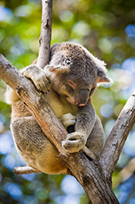
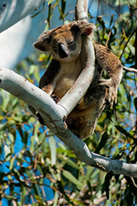

Bellow Information Copied from https://environment.des.qld.gov.au/wildlife/animals/living-with/koalas/facts
Koalas are well-known for their large round head, big furry ears and big black nose. Their fur is usually grey-brown in colour with white fur on the chest, inner arms, ears and bottom. They have no fur on their nose or the palms of their paws. Koalas have particularly hard bottoms, which is similar to their closest relative, the wombat. For the koala, this feature enables them to wedge comfortably in tree forks for long periods of time, whereas the wombat uses its hard bottom as a defence mechanism.
Koalas have poor vision and rely heavily on their other senses. They have excellent hearing which helps them detect predators and other koalas. They have an acute sense of smell which also helps them detect other koalas and their favourite food trees. The male uses a scent gland on his chest to mark trees and attract females, by rubbing his chest up and down the trunk. The gland oozes a clear, oily, strong musky smelling liquid.
 | Koala Name | Personality |
|---|---|
| Bob | Annoyed and Angry |
| Arin | Happy and Playful |
| George | Slow and Sleepy |
| Alfred | Curious and Cute |